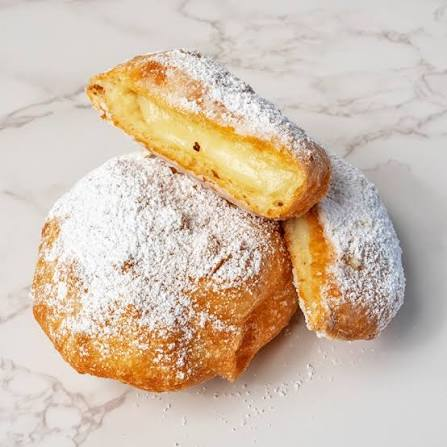

Home
Ponchik

Description
Ponchik is a type of doughnut that is popular in Eastern European countries.
It is typically filled with sweet fillings such as jam, chocolate, or custard,
and is often dusted with powdered sugar. The dough is soft and fluffy, making
it a delightful treat for breakfast or dessert.
Ingredients
- Flour
- Milk
- Eggs
- Sugar
- Yeast
- Butter
- custard
- powdered sugar
Steps
- In a large bowl, combine flour, sugar, and yeast.
- Add warm milk and eggs to the dry ingredients and mix until a dough forms.
- Knead the dough on a floured surface for about 10 minutes until smooth and elastic.
- Place the dough in a greased bowl, cover it with a cloth, and let it rise for about 1 hour or until doubled in size.
- Once risen, punch down the dough and roll it out to about 1/2 inch thickness.
- Cut out circles using a cookie cutter or glass.
- Place a small amount of custard in the center of half of the circles, then top with another circle and pinch the edges to seal.
- Heat oil in a deep fryer or large pot to 350°F (175°C).
- Carefully fry the filled doughnuts until golden brown on both sides, about 2-3 minutes per side.
- Remove from oil and drain on paper towels. Dust with powdered sugar before serving.